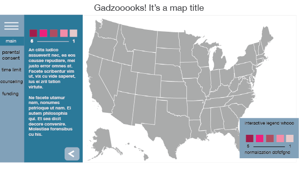
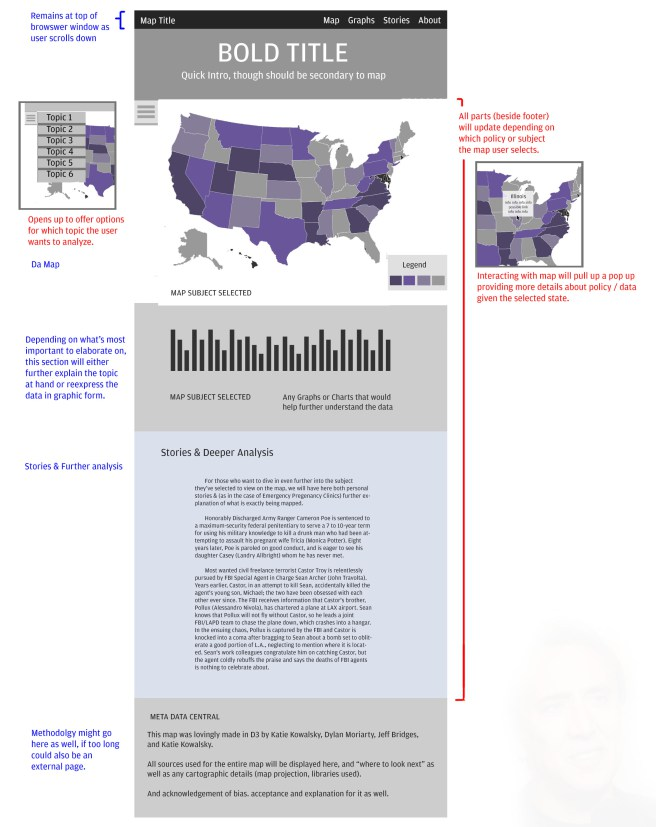
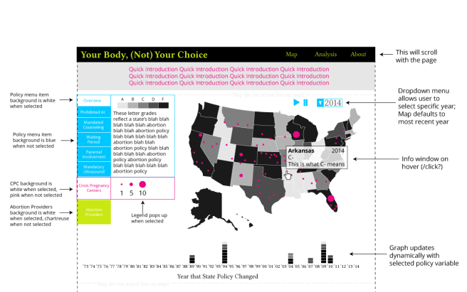
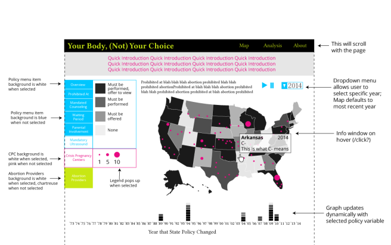

Iterative Design vis a vis a menu?
The most crucial part of making our map on abortion restriction is our menu. The menu, as shown in our prototypes below, works as our way to communicate what the legislative changes mean. When making a choropleth map, having a legend included not only effectively communicates the color ramp (Does white mean good or bad? A lot or a little? Rich or poor?) but the way our data got organized with the different ranges.
Design is an iterative process (as I remind myself when throwing away prototype after prototype) and I can guarantee, your first prototype will be very, very different than what you finish with.
Robin, Dylan, and I each made examples of what our map (and menu/legend) would look like throughout our design process.

Looking back on this, I’m so happy we’ve gone a million miles away from this design. I didn’t think about how much text would need to be next to the legend (and how our color ramps go from 2 items to 6). I also had this idea of using the arrow and hamburger icons to show that the menu opens and closes. The expanding menu was also going to have a deeper explanation of the restrictions, with a smaller, permanent legend in the far right corner.
The second, more official prototype was our official starting off point for the project. We had an even smaller hidden menu with that good ol’ hamburger icon. This was an abstraction of the last prototype: the user was given more trust to do what they wanted with the map.

A lot of that didn’t work. Having a menu open/close is great if you’re designing for mobile. It saves screen real-estate and there are a ton of cool jQuery plug ins I wanted to work with to make it. However, we didn’t want two legends (what’s the point then?) and having one stay open started to make more sense. We also had two proportional symbol overlays to design for and play/pause buttons and a dropdown menu to consider.
Hence, our next iteration:

This wireframe attempted to connect the main menu with the play/pause and dropdown area. We wanted the policy menu to always have one of the tabs displayed (hence the need to have the menu always visible). We started to realize the big problem with the choropleth legend changes in number of squares according to the policy selected. Our smallest legend is two and our largest is 6. Trying to design that horizontally means either updating the size of the square based on each policy or making each initially pretty small. Or we could have the size of the menu change, but that would shrink our map.
That main problem brought us to our current design:

We got rid of the explanation and are adding it to appear above the map itself, tying in the play/pause and year menu with the main menu. It makes our map legend more clear as well. Hopefully we won’t have another change, but with user-centered design, I wouldn’t be surprised if it changes before this is published online.
Some tenets I’ve learned from this process:
- Don't Be Afraid of the Mockup: Your first iteration is by no means your final design and is a great way to decide amongst your team about how things will look
- WIREFRAME: Making an image of every interaction the user might do allows you to think about every design decision you're making, all of the programming you will have to do, and reinforce your idea to your team.
- Go With The Flow: Think about how your user will think through using the map and website overall. Think about how your eyes move around the page- does it naturally flow and connect?
- Make a Spec Sheet: Consistency is important in your design, so while you're building what your website will look like, make a list of what your color scheme will be, how links will look, what the image sizes will be. If your team knows the standards from the start of programming, it'll save a lot of time fixing mistakes.
- Embrace Change: My plan of having a sliding menu didn't work. That's okay. We found a better solution and changed it. When we realized the horizontal legend wouldn't work, we changed it. Change is great, encouraged even. If you're thinking things through and worrying about how people will interact with your product, you're doing this process right.
← back to blog